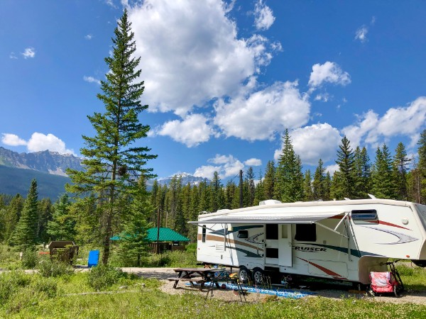

This is the landing page for Banff National Park. Here you can find information about the park's climate, hiking and camping options, and family vacation activities.
Banff National Park sees mild summers and cold, snowy winters. It’s been said that the most reliable characteristic of Banff and Lake Louise’s weather is its unpredictability. Be prepared! Make the most of your visit to Banff and Lake Louise by packing for all weather possibilities and checking the forecast and conditions before your trip.
Banff National Park comes alive in the summer. The rush of the Bow River, chirps of the birds, and sounds of critters scurrying through the landscape become the chorus of the summer months. The lakes are a vivid turquoise and wildflowers burst from the ground in a rainbow of colors. Camping is an amazing way to soak in all the beauty Banff National Park has to offer.
Experience the winter wonderland of Banff with a myriad of activities, from exhilarating downhill skiing and snowboarding to exploring the breathtaking landscapes with snowshoeing adventures and relaxing in picturesque hot springs.